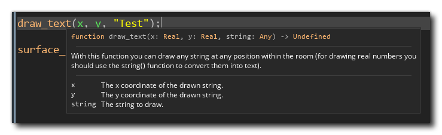
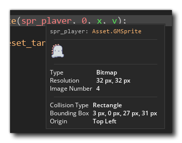
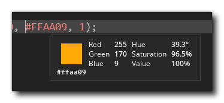
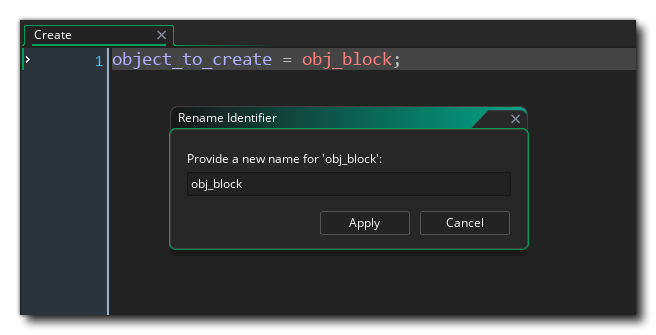
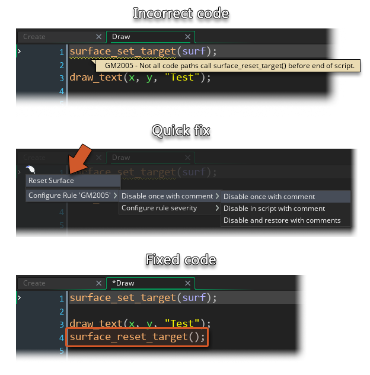
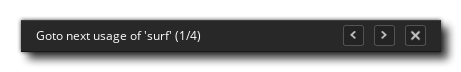

Feather在你的GML Codescripts ，提供智能的代码完成和改进的语法检查，以及智能的重构选项。
本页列出了Feather在GML 代码编辑器中为脚本和对象事件提供的功能。这些功能只有在Feather是 enabled.
另见（占位符）。
将鼠标悬停在一个函数、sprite 、颜色或任何其他特殊值上，将显示其信息。你可以看到下面的一些例子。



如果你在asset 浏览器中重命名一个Asset ，Feather会自动更新你项目代码中所有提到它的地方，所以这些引用不会中断。这可以在Feather设置中启用或禁用。
你也可以通过代码编辑器重命名一个asset 。将你的文本光标放在asset ，然后按CTRL/CMD + SHIFT + R。

输入一个新的名字并点击"应用"。asset 本身，以及你的项目中对它的所有引用，都将被重新命名。
当你的代码中出现错误或警告时，将你的文本光标放在被报告的行上，然后按CTRL/CMD+Q键，就会出现快速修复菜单。或者，你也可以点击水沟中的 Feather图标。
如果可能的话，这个菜单会向你显示一个快速修复方法，并允许你禁用该行的规则，或改变其严重程度。
上面的例子显示了一个快速修复方法，用于修复表面目标在被改变后没有被重置的事件。
当创建一个函数时，快速修复菜单允许你为该函数自动生成JSDoc注释。
Feather允许你在整个项目中找到对一个变量的所有引用。
将你的文本光标放在一个变量上，然后点击F3。你会在工作区的顶部看到一个小的搜索栏。

按相应的箭头导航到上一个或下一个参考，或关闭它。
这个搜索很聪明，所以它不是简单地搜索一个文本字符串，而是从其声明的范围中寻找所选变量的引用。这意味着两个具有相同名称但分别存在于两个不同objects ，的变量将不会匹配。
将你的文本光标放在一个变量上，然后点击SHIFT + F3。这将打开 "搜索结果 "窗口，并在一个列表中显示所选变量的所有引用。
